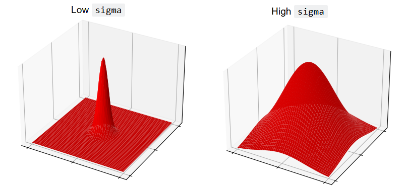
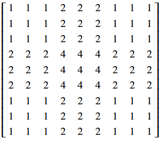

Image filtering II#
3.3.5 onward from: https://lectures.scientific-python.org/packages/scikit-image/index.html
Based on: https://scikit-image.org/skimage-tutorials/lectures/1_image_filters.html
Reference: https://www.kdnuggets.com/numpy-for-image-processing
Reference: https://setosa.io/ev/image-kernels
Reference: https://wiki.imindlabs.com.au/ds/aml/4_problem_domains/1-image-processing/3_edge_detectors
Reference: https://www.geeksforgeeks.org/deep-learning/types-of-convolution-kernels
Reference: skimage tutorials (check versions), scipy lecture notes
Reference: https://jni.github.io/i2k-skimage-napari/lectures/1_image_filters.html
import numpy as np
import matplotlib.pyplot as plt
import scipy.ndimage as ndi
import skimage as ski
# Set 'gray' as the default colormap
plt.rcParams['image.cmap'] = 'gray'
# Set NumPy precision to 2 decimal places
np.set_printoptions(precision=2)
# Custom functions for illustrations, and to quickly report image attributes.
from noise_illustration import generate_image, original_image
from gaussian_illustration import make_gaussian_kernel
from show_attributes import show_attributes
TO DO HERE: SHARPENING, BLURRING#
Other kernel types from this reference: https://www.geeksforgeeks.org/deep-learning/types-of-convolution-kernels/#1-identity-kernel
Gaussian filter#
From meeting: move this to before median filter…#
Use gaussian from here: https://sbme-tutorials.github.io/2018/cv/notes/4_week4.html
[Highlight that it is built from NumPy and SciPy - wrapper for scipy.ndimage.gaussian_filter?]
Gaussian filtering is another method of filtering, which can produce interesting results different to both mean filter and median filter.
We will discuss why it is called “Gaussian” shortly, for now, have a look at the fancy kernel below From meeting: for now let’s use “gaussian” very loosely, let’s have a look at a gaussian, for the moment all we will take from it is that at the center it has high values, thenthe values fall off at other sides. [Explain that the kernal below is Gaussian-like].
Start in 1d, show 1D gaussian
Show 2-D gaussian
# A fancy kernel.
small_gaussian_kernel = 1/16 * np.array([[1, 2, 1],
[2, 4, 2],
[1, 2, 1]])
small_gaussian_kernel
array([[0.06, 0.12, 0.06],
[0.12, 0.25, 0.12],
[0.06, 0.12, 0.06]])
Imagine this kernel plotted in 3D. It is in the shape of (3, 3). Imagine that the “floor” of the 3D plot is a 3-by-3 grid, with the integer index labels plotted on the \(x\) and \(y\)-axis. Imagine further that we plot the values in the kernel in the vertical direction, on the z-axis. Such a plot is shown below. A red wireframe connects the space in between each kernel value, to make the pattern between the individual elements clearer. The kernel values themselves are shown as dark blue text. The axis ticks show the integer index location of the kernel values.
From meeting: show plt.surface of the kernel then wireframe#
# Plot the fancy kernel.
from mpl_toolkits.mplot3d import Axes3D
x = np.arange(3)
y = np.arange(3)
X, Y = np.meshgrid(x, y)
Z = small_gaussian_kernel
fig = plt.figure(figsize=(9,9))
ax = fig.add_subplot(111, projection='3d')
ax.plot_wireframe(X, Y, Z, color='red')
ax.set_xticks([0, 1, 2])
ax.set_yticks([0, 1, 2])
plt.xlabel('Integer Index (axis = 0)')
plt.ylabel('Integer Index (axis = 1)')
for i in np.arange(small_gaussian_kernel.shape[0]):
for j in np.arange(small_gaussian_kernel.shape[1]):
ax.text(i, j, small_gaussian_kernel[i, j],
str(small_gaussian_kernel[i, j].round(2)),
color='darkblue');

Add something about: https://en.wikipedia.org/wiki/Crimson_Peak
Essentially, if we filter using this kernel, we “walk” this kernel through the image, with the top of the “red mountain” centered on a given pixel. The central pixel value is then replaced with an average of the pixels in the neighbourhood, but the other pixels in the neighbourhood are weighted by the height of the red wireframe for that kernel value. E.g. kernel elements which fall under higher points on the “mountain” will exert more influence on the weighted average, and pixels falling under lower points will exert a weaker influence.
Let’s use this kernel to filter our random_i image:
small_square = np.zeros((20, 20))
small_square[9:11, 9:11] = 1
print(small_square)
plt.imshow(small_square);
[[0. 0. 0. 0. 0. 0. 0. 0. 0. 0. 0. 0. 0. 0. 0. 0. 0. 0. 0. 0.]
[0. 0. 0. 0. 0. 0. 0. 0. 0. 0. 0. 0. 0. 0. 0. 0. 0. 0. 0. 0.]
[0. 0. 0. 0. 0. 0. 0. 0. 0. 0. 0. 0. 0. 0. 0. 0. 0. 0. 0. 0.]
[0. 0. 0. 0. 0. 0. 0. 0. 0. 0. 0. 0. 0. 0. 0. 0. 0. 0. 0. 0.]
[0. 0. 0. 0. 0. 0. 0. 0. 0. 0. 0. 0. 0. 0. 0. 0. 0. 0. 0. 0.]
[0. 0. 0. 0. 0. 0. 0. 0. 0. 0. 0. 0. 0. 0. 0. 0. 0. 0. 0. 0.]
[0. 0. 0. 0. 0. 0. 0. 0. 0. 0. 0. 0. 0. 0. 0. 0. 0. 0. 0. 0.]
[0. 0. 0. 0. 0. 0. 0. 0. 0. 0. 0. 0. 0. 0. 0. 0. 0. 0. 0. 0.]
[0. 0. 0. 0. 0. 0. 0. 0. 0. 0. 0. 0. 0. 0. 0. 0. 0. 0. 0. 0.]
[0. 0. 0. 0. 0. 0. 0. 0. 0. 1. 1. 0. 0. 0. 0. 0. 0. 0. 0. 0.]
[0. 0. 0. 0. 0. 0. 0. 0. 0. 1. 1. 0. 0. 0. 0. 0. 0. 0. 0. 0.]
[0. 0. 0. 0. 0. 0. 0. 0. 0. 0. 0. 0. 0. 0. 0. 0. 0. 0. 0. 0.]
[0. 0. 0. 0. 0. 0. 0. 0. 0. 0. 0. 0. 0. 0. 0. 0. 0. 0. 0. 0.]
[0. 0. 0. 0. 0. 0. 0. 0. 0. 0. 0. 0. 0. 0. 0. 0. 0. 0. 0. 0.]
[0. 0. 0. 0. 0. 0. 0. 0. 0. 0. 0. 0. 0. 0. 0. 0. 0. 0. 0. 0.]
[0. 0. 0. 0. 0. 0. 0. 0. 0. 0. 0. 0. 0. 0. 0. 0. 0. 0. 0. 0.]
[0. 0. 0. 0. 0. 0. 0. 0. 0. 0. 0. 0. 0. 0. 0. 0. 0. 0. 0. 0.]
[0. 0. 0. 0. 0. 0. 0. 0. 0. 0. 0. 0. 0. 0. 0. 0. 0. 0. 0. 0.]
[0. 0. 0. 0. 0. 0. 0. 0. 0. 0. 0. 0. 0. 0. 0. 0. 0. 0. 0. 0.]
[0. 0. 0. 0. 0. 0. 0. 0. 0. 0. 0. 0. 0. 0. 0. 0. 0. 0. 0. 0.]]

small_gaussian_filtered_small_square = ndi.correlate(small_square,
weights=small_gaussian_kernel)
# Plot comparison images.
plt.figure(figsize=(10, 4))
plt.subplot(1, 3, 1)
plt.title('Original')
plt.imshow(small_square)
plt.subplot(1, 3, 2)
plt.title('Gaussian-like Filter \n(3, 3) Kernel')
plt.imshow(small_gaussian_filtered_small_square);

Blurry! So to recap, we have averaged with a 3-by-3 pixel neightbourhood, replacing the central value of the kernel with a weighted average of all the pixel values in the neighbourhood. The weights are larger for pixels closer to the central value (e.g. closer to the center of the “red mountain” on the plot above).
This type of filtering is called Gaussian filtering because the kernel element values are from, or in the case of fancy_kernel approximates a Gaussian function. This is the function for the familiar normal distribution. The plot of the kernel above, with the “red mountain” may not look much like the normal distribution to you at the moment, but bear with us.
To see the Gaussian nature of this operation, let’s take a look at another, larger kernel below - it has shape (9, 9):
# Another kernel.
big_gaussian_kernel = make_gaussian_kernel(9)
big_gaussian_kernel.round(2)
array([[0. , 0. , 0. , 0. , 0. , 0. , 0. , 0. , 0. ],
[0. , 0. , 0. , 0.01, 0.01, 0.01, 0. , 0. , 0. ],
[0. , 0. , 0.01, 0.02, 0.03, 0.02, 0.01, 0. , 0. ],
[0. , 0.01, 0.02, 0.05, 0.07, 0.05, 0.02, 0.01, 0. ],
[0. , 0.01, 0.03, 0.07, 0.09, 0.07, 0.03, 0.01, 0. ],
[0. , 0.01, 0.02, 0.05, 0.07, 0.05, 0.02, 0.01, 0. ],
[0. , 0. , 0.01, 0.02, 0.03, 0.02, 0.01, 0. , 0. ],
[0. , 0. , 0. , 0.01, 0.01, 0.01, 0. , 0. , 0. ],
[0. , 0. , 0. , 0. , 0. , 0. , 0. , 0. , 0. ]])
Can you see any pattern in the arrangement of the numbers? Where are the high numbers, where are the low numbers?
We will also plot this kernel in 3-D, as with the last kernel. Again, the integer index locations of the array form the horizontal (\(x\) and \(y\)) axis values, and the values within the array are plotted on the vertical (\(z\)) axis:
From meeting: show this as a surface also#
# Plot the current kernel.
x_lin = np.linspace(-3, 3, big_gaussian_kernel.shape[0])
y_lin = x_lin.copy()
x, y = np.meshgrid(x_lin,
y_lin)
fig = plt.figure(figsize=(10, 10))
ax = fig.add_subplot(111, projection='3d')
ax.plot_wireframe(x, y, big_gaussian_kernel, color='red')
ax.set_xticks(np.linspace(x_lin.min(), x_lin.max(), big_gaussian_kernel.shape[0]))
ax.set_yticks(np.linspace(y_lin.min(), y_lin.max(), big_gaussian_kernel.shape[1]))
ax.set_xticklabels(np.arange(0, big_gaussian_kernel.shape[0]))
ax.set_yticklabels(np.arange(0, big_gaussian_kernel.shape[1]))
ax.set_xlabel('Integer Index \n`axis = 0`')
ax.set_ylabel('Integer Index \n`axis = 1`')
ax.set_zlabel('Kernel Element Value', labelpad=1)
ax.view_init(elev=10)
plt.locator_params(axis='x', nbins=8)
plt.locator_params(axis='y', nbins=8);

Ah, that’s better, you may recognise this as a 2-D gaussian distribution. For the small_gaussian_kernel it appeared more “spiky” as we have less points. In this bigger (9, 9) kernel, we can more see a smoother, more obviously Gaussian “mountain”.
Both our (3, 3) kernel above, and the larger kernel we just plotted, are called a gaussian blur kernels. Let’s look at the small_gaussian_kernel:

When comparing to the big_gaussian_kernel, you can see that the pattern in the numbers is the same. The biggest value occurs in the center of the array, the smallest values are in the corners of the array. For the bigger Gaussian kernel, it is apparent that kernel values closer to the center are larger, the values get smaller the further we get from the central pixel:

Essentially, if we filter using this kernel, we “walk” the gaussian kernel through the image, with the top of the “mountain” centered on a given pixel. The central pixel value is then replaced with an average of the pixels in the neighbourhood, though these are weighted by how close they are to the central pixel e.g. by how close they fall to the center of the gaussian surface we showed above. Pixels closer to the central pixel will exert more influence, pixels further away will exert a weaker influence.
Let’s convolve big_gaussian_kernel with the camera image, using ndi.correlate(), as we used for the mean filter:
big_gaussian_filtered_small_square = ndi.correlate(small_square,
weights=big_gaussian_kernel)
# Plot comparison images.
plt.figure(figsize=(10, 4))
plt.subplot(1, 3, 1)
plt.title('Original')
plt.matshow(small_square, fignum=0)
plt.subplot(1, 3, 2)
plt.title('Gaussian filter \n(3, 3) Kernel')
plt.matshow(small_gaussian_filtered_small_square, fignum=0);
plt.subplot(1, 3, 3)
plt.title('Gaussian filter \n(9, 9) Kernel')
plt.matshow(big_gaussian_filtered_small_square, fignum=0);

It is apparent that the larger kernel has “spread” the intensity of higher-valued pixels further than the small kernel.
Both of these kernels, in relative terms, are quite small. As such, it is easier to see their effect in lower-resolution images. Higher resolution images will typically require larger kernels for the same results.
Below, we make a pixelated version of camera:
camera = ski.data.camera()
pixelated_camera = ski.transform.rescale(camera, 0.2) # Rescale to 20% of original size.
plt.imshow(pixelated_camera);

Below, we filter with separately with small_gaussian_kernel and big_gaussian_kernel:
small_gaussian_filtered_pixelated_camera = ndi.correlate(pixelated_camera,
weights=small_gaussian_kernel)
big_gaussian_filtered_pixelated_camera = ndi.correlate(pixelated_camera,
weights=big_gaussian_kernel)
# Plot comparison images.
plt.figure(figsize=(10, 4))
plt.subplot(1, 3, 1)
plt.title('Original (Pixelated)')
plt.matshow(pixelated_camera, fignum=0)
plt.subplot(1, 3, 2)
plt.title('Gaussian filter \n(3, 3) Kernel')
plt.matshow(small_gaussian_filtered_pixelated_camera, fignum=0);
plt.subplot(1, 3, 3)
plt.title('Gaussian filter \n(9, 9) Kernel')
plt.matshow(big_gaussian_filtered_pixelated_camera, fignum=0);

The smoothing effect is clear, with the larger kernel creating a more striking smoothing effect.
Gaussian filters in skimage#
This Gaussian filter is easiy to implement in skimage, let’s try it with the cat image from ski.data:
# Load the `cat` image.
cat = ski.data.cat()
show_attributes(cat)
plt.imshow(cat);
Type: <class 'numpy.ndarray'>
dtype: uint8
Shape: (300, 451, 3)
Max Pixel Value: 231
Min Pixel Value: 0
ski.filters.gaussian() implements the Gaussian filter. We can control the sigma parameter, which controls the spread of the Gaussian “mountain” in the kernel. Lower values will reduce the weight of pixel values far from the central pixel, weighting only those close to it highly. Conversely, higher values will give greater weight to pixels further away from the central pixel:

Let’s apply the filter with a sigma of 3:
plt.imshow(ski.filters.gaussian(cat,
sigma=3));

Different sigma values will introduce a blurrier effect, as for higher sigma values, pixels further from the central value within each kernel are exerting more influence in the averaging calculation:
# Plot with different `sigma` values.
plt.figure(figsize=(14, 3))
for i, sigma in enumerate(np.arange(2, 12, 2)):
plt.subplot(1, 5, i+1)
plt.imshow(ski.filters.gaussian(cat,
sigma=sigma))
plt.xticks([])
plt.yticks([])
plt.title(f"sigma = {sigma}")
plt.suptitle('skimage.filters.gaussian()')
plt.show()

ex krazy-kernel
From meeting: move this exercise to later, becuase the explanation involves a discussion of integer overflow. Maybe show them the scaling, then the exercise purpose is to use astype(float) on the original array to avoid overflow. Have a hint about “255 + 1” and the effect on the image. Also discuss whether kernels need to sum to 1 (yes, if we want to preserve the scaling of the image e.g. if it sums to 100, all the pixel values will be times 100 etc.).#
Here is another kernel which follows a Gaussian-like pattern (e.g. pixels closer to the center are weighted more heavily):

It is defined as a variable in the cell below:
almost_gaussian_kernel = np.array([[1, 1, 1, 2, 2, 2, 1, 1, 1],
[1, 1, 1, 2, 2, 2, 1, 1, 1],
[1, 1, 1, 2, 2, 2, 1, 1, 1],
[2, 2, 2, 4, 4, 4, 2, 2, 2],
[2, 2, 2, 4, 4, 4, 2, 2, 2],
[2, 2, 2, 4, 4, 4, 2, 2, 2],
[1, 1, 1, 2, 2, 2, 1, 1, 1],
[1, 1, 1, 2, 2, 2, 1, 1, 1],
[1, 1, 1, 2, 2, 2, 1, 1, 1]])
almost_gaussian_kernel
array([[1, 1, 1, 2, 2, 2, 1, 1, 1],
[1, 1, 1, 2, 2, 2, 1, 1, 1],
[1, 1, 1, 2, 2, 2, 1, 1, 1],
[2, 2, 2, 4, 4, 4, 2, 2, 2],
[2, 2, 2, 4, 4, 4, 2, 2, 2],
[2, 2, 2, 4, 4, 4, 2, 2, 2],
[1, 1, 1, 2, 2, 2, 1, 1, 1],
[1, 1, 1, 2, 2, 2, 1, 1, 1],
[1, 1, 1, 2, 2, 2, 1, 1, 1]])
When we filter small_square using this kernel, we get some strange results:
# (Probably) not what we want...
almost_gaussian_filtered_camera = ndi.correlate(camera,
weights=almost_gaussian_kernel)
plt.matshow(almost_gaussian_filtered_camera);
show_attributes(almost_gaussian_filtered_camera)
Type: <class 'numpy.ndarray'>
dtype: uint8
Shape: (512, 512)
Max Pixel Value: 255
Min Pixel Value: 0
This may be a pretty cool effect, but it is not smoothing the image, as a Gaussian filter would do.
With a small modification to the kernel, however, we can get the following Gaussian-like smoothing on pixelated_camera:

Try to adjust the almost_gaussian_kernel to obtain this target image. DO NOT recreate the kernel array and “manually” modify the original numbers. Use numpy, scipy or skimage operations to do what you need.
Hint: you may want to investigate the .sum() of all of the kernels we have used hitherto…
# YOUR CODE HERE
other_gaussian_kernel = ...
other_gaussian_filtered_small_square = ...
SOLUTION - scale the kernel to sum to 1. Multiply by the reciprocal of the sum of the kernel:

# SOLUTION - scale the kernel to sum to 1
almost_gaussian_filtered_camera = ndi.correlate(camera,
weights=1/almost_gaussian_kernel.sum() * almost_gaussian_kernel)
plt.matshow(almost_gaussian_filtered_camera);
Median filter#
Add here: show median within a few kernels - but also mention it cannot be done via convolution#
The median filter uses the same process of “walking” through the image with a kernel. However, instead of taking the mean of the kernel, takes the median value. The median filter is especially useful for removing noise from images, while preserving the “edges” in the image. We will demonstrate this with the brick image from ski.data:
# Load in the `brick` image.
brick = ski.data.brick()
show_attributes(brick)
plt.imshow(brick);
Type: <class 'numpy.ndarray'>
dtype: uint8
Shape: (512, 512)
Max Pixel Value: 207
Min Pixel Value: 63

We can easily implement a median filter using ski.filters.median(), again we supply a footprint argument to determine the kernel. We will also filter brick using a mean filter, with the same size kernel as the median filter:
# Apply a median filter.
median_filtered_brick = ski.filters.median(brick,
footprint=np.ones((9,9)))
mean_filtered_brick = ski.filters.rank.mean(brick,
footprint=np.ones((9,9)))
# Plot both image to compare
plt.figure(figsize=(14, 4))
plt.subplot(1, 3, 1)
plt.title('Original Image')
plt.imshow(brick)
plt.subplot(1, 3, 2)
plt.title('Median Filtered')
plt.imshow(median_filtered_brick)
plt.subplot(1, 3, 3)
plt.title('Mean Filtered')
plt.imshow(mean_filtered_brick);

You can see that the edges in the images (transitions between pixels of very different intensities - in this case between the dark bricks and the lighter mortar lines) are less smoothed by the median filter than by the mean filter. This is considered a desirable property of the median filter.
Edge filtering#
Link back to np.diff() exercise from processing page (e.g. as very simple edge detector)#
In image processing and computer vision, an edge is a rapid change in intensity between pixels - e.g. there is a high gradient of change between the pixel values.
We can construct a kernel which will detect these intensity changes in the vertical (Y) direction:
# from: https://scikit-image.org/skimage-tutorials/lectures/1_image_filters.html
vertical_edge_detection_kernel = np.array([[-1, -1, -1],
[0, 0, 0],
[1, 1, 1]])
vertical_edge_detection_kernel
array([[-1, -1, -1],
[ 0, 0, 0],
[ 1, 1, 1]])
Here we make an image array with very clear vertical edges - one edge is at the top of the white square, the other is at the bottom of the white square:
edgy = np.array([ [0, 0, 0, 0, 0, 0, 0, 0, 0, 0],
[0, 0, 0, 0, 0, 0, 0, 0, 0, 0],
[0, 0, 1, 1, 1, 1, 1, 1, 0, 0],
[0, 0, 1, 1, 1, 1, 1, 1, 0, 0],
[0, 0, 1, 1, 1, 1, 1, 1, 0, 0],
[0, 0, 1, 1, 1, 1, 1, 1, 0, 0],
[0, 0, 1, 1, 1, 1, 1, 1, 0, 0],
[0, 0, 1, 1, 1, 1, 1, 1, 0, 0],
[0, 0, 1, 1, 1, 1, 1, 1, 0, 0],
[0, 0, 0, 0, 0, 0, 0, 0, 0, 0],
[0, 0, 0, 0, 0, 0, 0, 0, 0, 0]])
plt.imshow(edgy);

Convolving with our vertial edge detection kernel finds the vertical edges:
edgy_vertical = ndi.correlate(edgy,
vertical_edge_detection_kernel)
plt.imshow(edgy_vertical);

Let’s think about what has happened here at the level of the individual pixels. Three kernel locations from the top of the array are represented below:

You can see that, for a binary image, the vertical kernel convolution essential “counts” the number of 0-to-1 vertical changes in the kernel location.
Conversely, when the kernel hits the 1-to-0 vertical changes at the bottom of the array, we get a similar count but of negative numbers:
edgy_vertical
array([[ 0, 0, 0, 0, 0, 0, 0, 0, 0, 0],
[ 0, 1, 2, 3, 3, 3, 3, 2, 1, 0],
[ 0, 1, 2, 3, 3, 3, 3, 2, 1, 0],
[ 0, 0, 0, 0, 0, 0, 0, 0, 0, 0],
[ 0, 0, 0, 0, 0, 0, 0, 0, 0, 0],
[ 0, 0, 0, 0, 0, 0, 0, 0, 0, 0],
[ 0, 0, 0, 0, 0, 0, 0, 0, 0, 0],
[ 0, 0, 0, 0, 0, 0, 0, 0, 0, 0],
[ 0, -1, -2, -3, -3, -3, -3, -2, -1, 0],
[ 0, -1, -2, -3, -3, -3, -3, -2, -1, 0],
[ 0, 0, 0, 0, 0, 0, 0, 0, 0, 0]])
We can “flip” our edge detection kernel to look for big changes in gradient in the horizontal (X) direction:
# from: https://scikit-image.org/skimage-tutorials/lectures/1_image_filters.html
horizontal_edge_detection_kernel = vertical_edge_detection_kernel.T
horizontal_edge_detection_kernel
array([[-1, 0, 1],
[-1, 0, 1],
[-1, 0, 1]])
Now when applied to our edgy image array, it detects the changes in the horizontal direction (at the side edges of the square):
# The original square.
plt.imshow(edgy);
edgy_horizontal = ndi.correlate(edgy,
horizontal_edge_detection_kernel)
plt.imshow(edgy_horizontal);

Applied to more complex images, this can have some pretty cool effects:
coffee_grey = ski.color.rgb2gray(ski.data.coffee())
# Plot the original image.
plt.imshow(coffee_grey);

gradient_vertical_coffee_grey = ndi.correlate(coffee_grey,
vertical_edge_detection_kernel)
plt.imshow(gradient_vertical_coffee_grey);

gradient_horizontal_coffee_grey = ndi.correlate(coffee_grey,
horizontal_edge_detection_kernel)
plt.imshow(gradient_horizontal_coffee_grey);

We can combine these two edge detection filters together to search for edges in both directions, by calculating the Euclidean distance between the arrays that result from searching for edges in either direction (horizontal (\(G_{x}\)) or vertical (\(G_{y}\))):
\( d = \sqrt {\left( G_{x}^2 + G_{y}^2\right) } \)
edgy_horizontal_vertical_stack = np.stack([edgy_horizontal, edgy_vertical], axis=2)
edgy_horizontal_vertical_stack = np.abs(edgy_horizontal_vertical_stack).max(axis=2)
plt.imshow(edgy_horizontal_vertical_stack);

# Search for both types of edge (with `edgy`).
plt.imshow(np.sqrt(edgy_horizontal**2 + edgy_vertical**2));

# Search for both types of edge (with `coffee_grey`).
coffee_horizontal_vertical_stack = np.stack([gradient_horizontal_coffee_grey, gradient_vertical_coffee_grey], axis=2)
coffee_horizontal_vertical_stack = np.abs(coffee_horizontal_vertical_stack).max(axis=2)
plt.imshow(coffee_horizontal_vertical_stack);
#plt.imshow(np.sqrt(gradient_horizontal_coffee_grey**2 + gradient_vertical_coffee_grey**2));

# Plot all the `edgy` images together.
both_edgy = np.sqrt(edgy_horizontal**2 + edgy_vertical**2)
plt.figure(figsize=(16, 6))
plt.subplot(1, 4, 1)
plt.title("Original")
plt.imshow(edgy)
plt.subplot(1, 4, 2)
plt.title("Vertical Edge Gradients")
plt.imshow(edgy_vertical)
plt.subplot(1, 4, 3)
plt.title("Horizontal Edge Gradients")
plt.imshow(edgy_horizontal)
plt.subplot(1, 4, 4)
plt.title("Both Combined")
plt.imshow(both_edgy);

# Plot all the `coffee_grey` images together.
both_coffee = np.sqrt(gradient_horizontal_coffee_grey**2 + gradient_vertical_coffee_grey**2)
plt.figure(figsize=(16, 6))
plt.subplot(1, 4, 1)
plt.title("Original")
plt.imshow(coffee_grey)
plt.subplot(1, 4, 2)
plt.title("Vertical Edge Gradients")
plt.imshow(gradient_vertical_coffee_grey)
plt.subplot(1, 4, 3)
plt.title("Horizontal Edge Gradients")
plt.imshow(gradient_horizontal_coffee_grey)
plt.subplot(1, 4, 4)
plt.title("Both Combined")
plt.imshow(both_coffee);

Sobel and Roberts filters#
The Sobel and Roberts filters are other edge detection algorithms that also combine horizontal and vertical edge detection filters.
# adapted from skimage docs
edge_roberts = ski.filters.roberts(edgy)
edge_sobel = ski.filters.sobel(edgy)
camera = ski.data.camera()
camera_roberts = ski.filters.roberts(camera)
camera_sobel = ski.filters.sobel(camera)
plt.figure(figsize=(12, 12))
plt.subplot(2, 2, 1)
plt.imshow(edge_roberts)
plt.title('Roberts Edge Detection')
plt.subplot(2, 2, 2)
plt.imshow(edge_sobel)
plt.title('Sobel Edge Detection')
plt.subplot(2, 2, 3)
plt.imshow(camera_roberts)
plt.title('Roberts Edge Detection')
plt.subplot(2, 2, 4)
plt.imshow(camera_sobel)
plt.title('Sobel Edge Detection')
plt.axis('off');

Non-local filters#
camera_equalized = ski.exposure.equalize_hist(camera)
plt.figure(figsize=(10, 10))
plt.subplot(1, 2, 1)
plt.imshow(camera)
plt.subplot(1, 2, 2)
plt.imshow(camera_equalized);

Summary#
This page has showed how to use convolution kernels to filter images, using numpy, scipy and skimage.